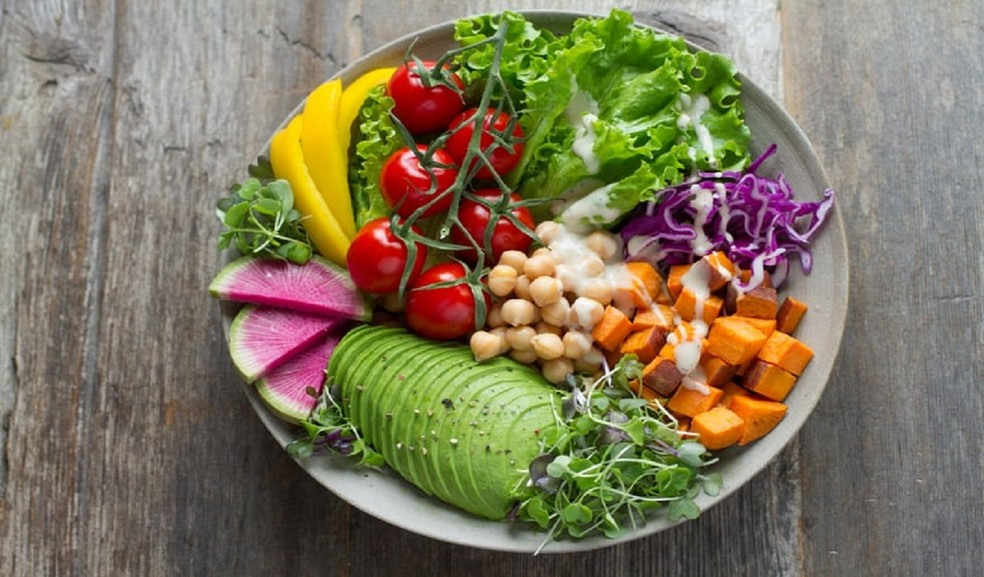

Uma alimentação saudável não é necessariamente uma dieta, mais sim um estilo de alimentação. Existem vários estilos de alimentação saudável, e aqui vamos falar sobre eles, que são:
Macrobiótica
É uma alimentação baseada na filosofia chinesa Yin Yang, que tem como estilo a conexão com a natureza e seu equilíbrio, então essa alimentação está ligada com alimentos nutritivos e saudáveis, quase sem nenhum tipo de processamento.
Os alimentos permitidos são: grãos, vegetais, feijões, soja fermentada, frutas, sementes, nozes e peixes.
Alimentos não permitidos: pimentas, café, açúcar, álcool, chocolate, farinha refinada, carne, chá cafeinado, alimentos lácteos, aves, batatas e produtos químicos.

Vegetariana
É uma alimentação que tem como restrição as carnes de origem animal, pode ser escolhida por pessoas que não gostam de carne ou por conscientização da mortalidade animal, entre outros diversos motivos. É uma ótima opção para quem quer perder peso.
Os únicos alimentos proibidos são as carnes de origem animal: gado, suíno, frango, peixe, bovino
Vegana
É mais restrita do que a alimentação vegetariana, tem como principal lema o respeito dos direitos dos animais. Os veganos não consomem nenhum alimento de origem animal, e até mesmo os seus derivados, como ovos, queijo, leite, mel.
A alimentação vegana é como um estilo de vida, as pessoas não usam roupas que derivam de origem animal, por exemplo, algodão e lã.
Fitness
É uma derivação da alimentação saudável por si só. Porém é uma alimentação com alimentos mais voltados para atividades físicas, recondicionamento muscular e energia. Caminha juntamente com a atividade física.
Foca em carboidratos de boa qualidade, muita proteína, legumes, verduras, frutas, abacate, ovos. Visa o ganho de massa muscular boa.
Mas é recomendado procurar um especialista para analisar juntamente com você qual é a alimentação mais indicada. Por que, por exemplo, na alimentação vegana e vegetariana, é necessária a reposição de algumas vitaminas que nosso corpo precisa e são encontradas em animais. Sendo assim, é sempre muito bom consultar um especialista para tratar do assunto.